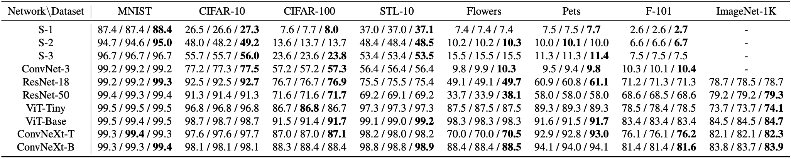
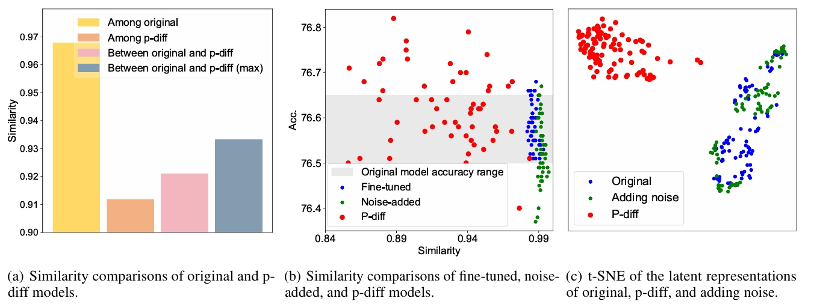
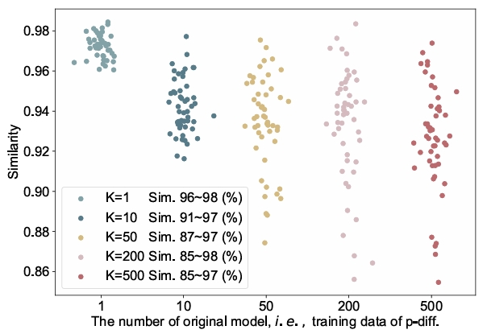

Neural Network Diffusion
Diffusion-based image generation
vs
SGD-based optimization

|
Abstract
|
Diffusion models have achieved remarkable success in image and video generation. In this work,we demonstrate that diffusion
models can also generate high-performing neural network parameters. Our approach is simple, utilizing an autoencoder and
a standard latent diffusion model.The autoencoder extracts latent representations of a subset of the trained network parameters.
A diffusion model is then trained to synthesize these latent parameter representations from random noise. It then generates new
representations that are passed through the autoencoder's decoder,whose outputs are ready to use as new subsets ofnetwork parameters.
Across various architectures and datasets, our diffusion process consistently generates models of comparable or improved performance over
trained networks, with minimal additional cost. Notably, we empirically find that the generated models perform differently with the trained
networks. Our results encourage more exploration on the versatile use of diffusion models. The code will be made public.
|
Method

Illustration of the proposed p-diff framework. Our approach consists of two proceses, named parameter autoencoder and generation.
Parameter autoencoder aims to extract the latent representations and reconstruct model parameters via the decoder.
The extracted representations are used to train a standard latent diffusion model (LDM).
In the inference, the random noise is fed into LDM and trained decoder to obtain the generated parameters.
|
Results
|

We present results in the format of ‘original / ensemble / p-dif’. Our method obtains similar or even higher performance than baselines. The results of p-diff is average in three runs. Bold entries are best results.
|
Ablations

P-diff main ablation experiments.
We ablate the number of orieinal models K, the location of applying our approach, and the effect of noise augmentation.
The default setings are K= 200,
applying p-diff on the deep BN parameters (between layer16 to 18), and using noise augmentation in the input parameters and latent representations.
Defaults are marked in gray. Bold entries are best results.
|
Is P-diff Only memorizing?
|
Questions and experiment designs. Here, we frst askthe following questions: 1) Does p-diff just memorize the samples from the original models
in the training set? 2) Is there any difference among adding noise or fne-tuning the original models, and the models generated by our approach?
The similarity represents the Intersection of Union (loU) over wrong predictions between/among two models. The IoU can be formulated as follows,
$$ \mathrm{IoU} = |P_{1}^{\mathrm{wrong}} \cap P_{2}^{\mathrm{wrong}}|/|P_{1}^{\mathrm{wrong}} \cup P_{2}^{\mathrm{wrong}}|$$

(a) shows the comparisons in four cases. It shows our p-diff can generate new parameters that perform differently with their training data (i.e. original models).
(b) displays the accuracy and max similarity of fine-tuned.noise-added, and p-diff models. All the maximum similarities are calculated with the original models. Our generated models achieve diverse similarities and superior performances compared to the original models.
(c) presents the t-SNE of latent representations of the original models, p-diff models, and adding noise operation.
|
|

We visualize the max similarities between original and generated models with different K. The similarity range of these generated models becomes larger as K increases, demonstrating our approach can generate parameters that perform differently from the original models.
|
Acknowledgements
We thank Kaiming He,
Dianbo Liu,
Mingjia Shi,
Zheng Zhu,
Jiawei Liu,
Yong Liu,
Ziheng Qin,
Zangwei Zheng,
Yifan Zhang,
Xiangyu Peng,
Hongyan Chang,
and
David Yin for valuable discussions and feedbacks.
BibTeX
@article{wang2024neural,
title={Neural Network Diffusion},
author={Kai Wang, Zhaopan Xu, Zhuang Liu, Yukun Zhou, Zelin Zang, Trevor Darrell and Yang You},
year={2024},
eprint={2401.xxxx},
archivePrefix={arXiv},
primaryClass={cs.CV}
}
|
|
Please feel free to contact us via email at Kai Wang or Yukun Zhou for any inquiries or assistance.
|